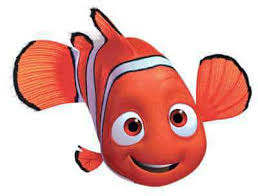
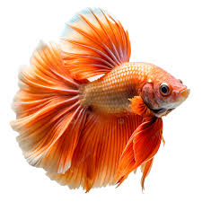
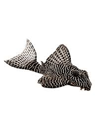
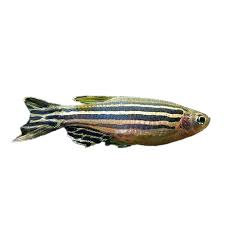
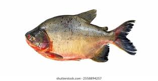
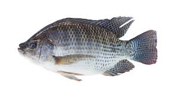
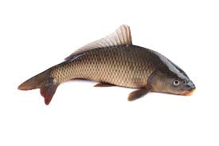
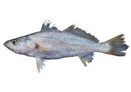
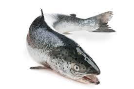
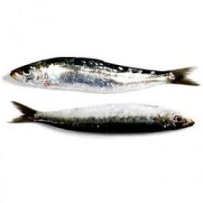

Mais conhecido como peixe-palhaço, peixe-das-anêmonas ou simplesmente nemo.
Com coloração alaranjada e listras brancas

O peixe Betta é um dos peixes ornamentais mais populares do mundo. Originário do Sudeste Asiático destaca-se por
suas cores vibrantes e nadadeiras exuberantes

Os cascudos caracterizam-se pelo corpo delgado, revestido de placas ósseas, e pela cabeça grande
A boca localiza-se na face ventral e em algumas espécies é rodeada por barbas. Estes peixes vivem nos fundos dos rios,

Uma espécie de água doce muito popular no aquarismo, famosa por sua grande resistência comportamento ativo e listras que lembram a bandeira do estado de São Paulo.

Os cascudos caracterizam-se pelo corpo delgado, revestido de placas ósseas, e pela cabeça grande
A boca localiza-se na face ventral e em algumas espécies é rodeada por barbas. Estes peixes vivem nos fundos dos rios,

Tilápias são fáceis de manter em aquário, já que lhes é suficiente o espaço neles.
Elas se reproduzem facilmente e crescem rapidamente

Muito encontrado em lagos de água doce e rios da Ásia
(mais especificamente da China), Europa e África, pode ser
criado em vários ambientes, adaptando-se bem a tanques externos.

É um dos peixes mais consumidos no Brasil, famosa por sua carne branca, sabor suave e baixo teor de espinhas

Um dos peixes mais consumidos do mundo, famoso por sua carne de cor alaranjada, sabor marcante e alto valor nutricional

é um peixe pequeno, saboroso, altamente nutritivo e um dos alimentos mais acessíveis do mercado.
Pertencente à família Clupeidae,
ela vive em grandes cardumes em águas salgadas e rasas
GABRIEL FERREIRA UCIEL 1DS-N